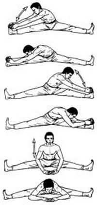

<- back
Next up: Сломанный ветром тростник
Тростник раскачивается на ветру

Исходное положение: Сидим, максимально расставив в стороны вытянутые ноги; носки оттянуты на себя.
На выдохе наклоняемся верхней частью корпуса к правой ноге на 4 счета. На вдохе возвращаемся обратно, полностью не распрямляясь. Затем на 4 счета к левой ноге и на 4 счета – к полу между ног.
При выполнении упражнения надо ухватиться руками за пальцы ног или стопу и тянуться грудью к ноге, выдвигая подбородок вперед, спину держать прямую.
Повторяем 2 раза.
Next up: Сломанный ветром тростник